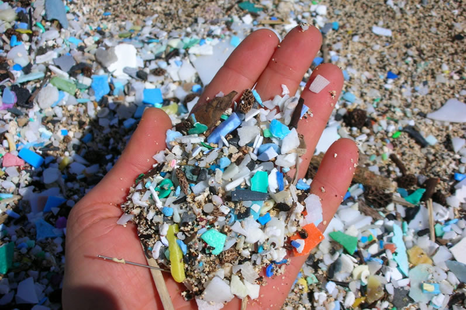
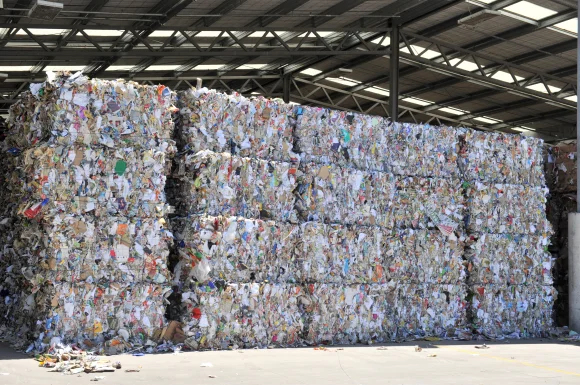
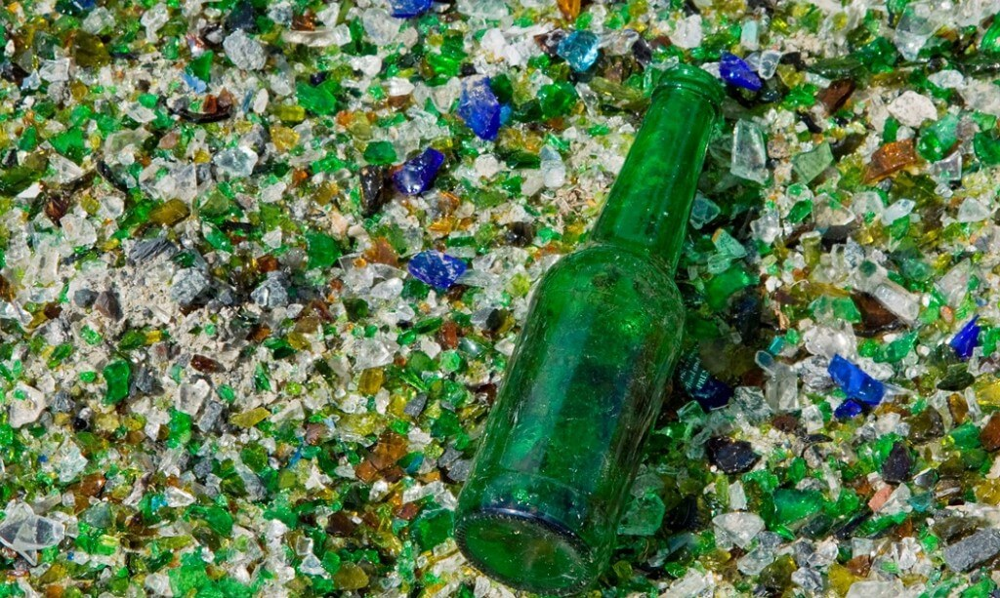
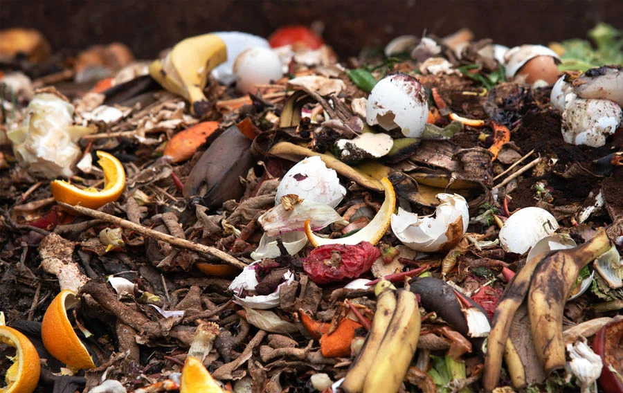

Lugares de Reciclaje
Cargando ubicación...
Materiales

Plástico: Contenedor azul.

Papel: Contenedor verde.

Vidrio: Contenedor verde claro.

Orgánico: Contenedor marrón.
Datos Curiosos
El reciclaje de una tonelada de papel ahorra 17 árboles.
Un envase de plástico tarda 450 años en descomponerse.
El vidrio puede ser reciclado infinitamente.
Manualidades
Manualidades que puedes hacer con elementos reciclados.
- Maceteros de latas: Pinta latas de conservas y úsalas como maceteros.
- Portarrollos de papel: Convierte tubos de papel higiénico en portarrollos.
- Collares de tapas: Haz collares con tapas de plástico.
Clima Actual
Cargando clima...